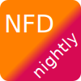

<!DOCTYPE html>
<meta charset="utf-8">
<title>NFD nightly APT repository</title>
<meta name="viewport" content="width=device-width, initial-scale=1">
<link rel="stylesheet" href="https://cdn.jsdelivr.net/npm/purecss@2">
<style>
a { text-decoration: none; }
html { position: relative; min-height: 100%; }
body { padding: 0 0.2rem 6rem 0.2rem; }
@media(min-width: 980px) { body { padding: 0 3rem 6rem 3rem; } }
.logo { position: absolute; right: 0; top: 0; }
@media(max-width: 980px) { .logo { display: none; } }
footer { position: absolute; right: 0; bottom: 0; left: 0; padding: 1rem 3rem 1rem 3rem; }
</style>

<section>

<h1>NFD nightly APT repository</h1>
<p>
Automated builds of NDN Forwarding Daemon (NFD) and related software.
(<a href="https://yoursunny.com/t/2021/NFD-nightly-usage/" target="_blank" rel="noopener">usage instructions</a>)
</p>

<form class="pure-form">
  <fieldset>
    <legend>Operating System</legend>
    <label class="pure-radio" data-repo="debian" data-distro="buster" data-arch="armhf">
      <input name="os" type="radio"> Debian 10 (Buster), ARMv7 (BeagleBone Black)
    </label>
    <label class="pure-radio" data-repo="debian" data-distro="bullseye" data-arch="amd64">
      <input name="os" type="radio" checked> Debian 11 (Bullseye), x86_64 (laptops and servers, recommended for Docker)
    </label>
    <label class="pure-radio" data-repo="debian" data-distro="bullseye" data-arch="arm64">
      <input name="os" type="radio"> Debian 11 (Bullseye), ARMv8 (PinePhone)
    </label>
    <label class="pure-radio" data-repo="ubuntu" data-distro="focal" data-arch="amd64">
      <input name="os" type="radio"> Ubuntu 20.04 (Focal), x86_64 (laptops and servers)
    </label>
    <label class="pure-radio" data-repo="ubuntu" data-distro="jammy" data-arch="amd64">
      <input name="os" type="radio"> Ubuntu 22.04 (Jammy), x86_64 (laptops and servers)
    </label>
    <label class="pure-radio" data-repo="raspberrypi" data-distro="bullseye" data-arch="armhf">
      <input name="os" type="radio"> Raspberry Pi OS (Bullseye), ARMv6 (Raspberry Pi Zero W)
    </label>
  </fieldset>
  <fieldset>
    <legend>Setup Command</legend>
    <pre id="p_setup"></pre>
  </fieldset>
  <fieldset>
    <legend>Available Packages</legend>
    <p id="p_error" class="hidden"></p>
    <table id="p_list" class="pure-table hidden">
      <thead>
        <tr>
          <th>Package</th>
          <th>Description</th>
        </tr>
      </thead>
    </table>
  </fieldset>
</form>
</section>

<footer>
<p>&copy; yoursunny.com, powered by <a href="https://github.com/yoursunny/NFD-nightly/actions" target="_blank" rel="noopener">GitHub Actions</a> and <a href="https://www.balena.io/docs/reference/base-images/base-images-ref/" target="_blank" rel="noopener">Balena Docker images</a></p>
</footer>
<script type="module" src="app.js"></script>

<script>
(function(e,t,n,i,s,a,c){e[n]=e[n]||function(){(e[n].q=e[n].q||[]).push(arguments)}
;a=t.createElement(i);c=t.getElementsByTagName(i)[0];a.async=true;a.src=s
;c.parentNode.insertBefore(a,c)
})(window,document,"galite","script","https://cdn.jsdelivr.net/npm/ga-lite@2/dist/ga-lite.min.js");
if (location.hostname.endsWith(".ndn.today")) {
  galite("create", "UA-935676-11", "auto");
  galite("send", "pageview");
}
</script>
